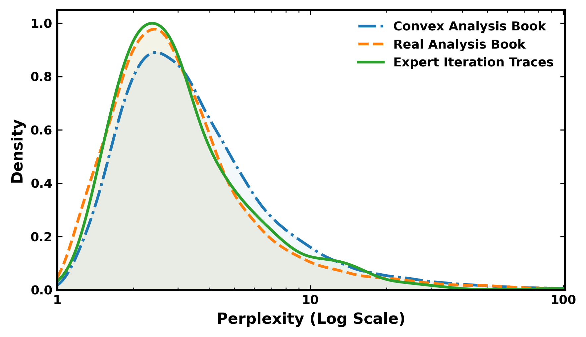
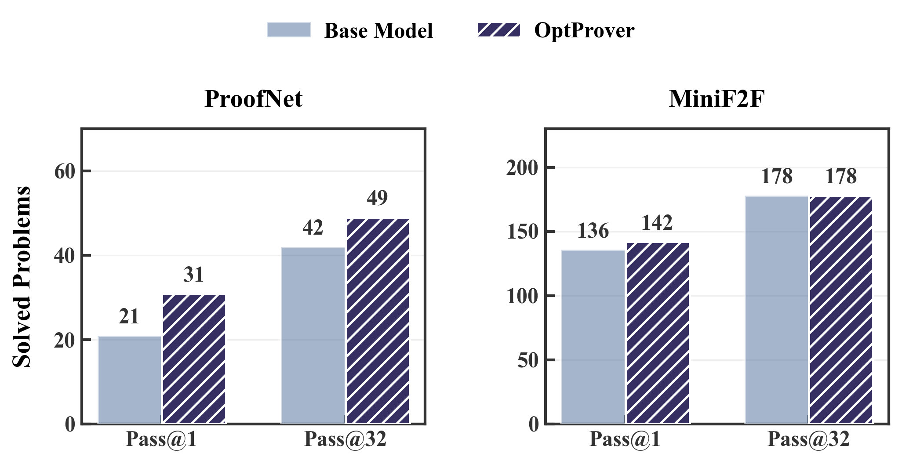

Builds a Lean 4 optimization theorem-proving benchmark and trains OptProver on it.
Abstract
Recent advances in formal theorem proving have focused on Olympiad-level mathematics, leaving undergraduate domains largely unexplored. Optimization, fundamental to machine learning, operations research, and scientific computing, remains underserved by existing provers. Its reliance on domain-specific formalisms (convexity, optimality conditions, and algorithmic analysis) creates significant distribution shift, making naive domain transfer ineffective. We present OptProver, a trained model that achieves robust transfer from Olympiad to undergraduate optimization. Starting from a strong Olympiad-level prover, our pipeline mitigates distribution shift through two key innovations. First, we employ large-scale optimization-focused data curation via expert iteration. Second, we introduce a specialized preference learning objective that integrates perplexity-weighted optimization with a mechanism to penalize valid but non-progressing proof steps. This not only addresses distribution shifts but also guides the search toward efficient trajectories. To enable rigorous evaluation, we construct a novel benchmark in Lean 4 focused on optimization. On this benchmark, OptProver achieves state-of-the-art Pass@1 and Pass@32 among comparably sized models while maintaining competitive performance on general theorem-proving tasks, demonstrating effective domain transfer without catastrophic forgetting.
Problem
Recent formal theorem proving advances focus on Olympiad-level mathematics, leaving undergraduate domains like optimization largely unexplored. Optimization's reliance on domain-specific formalisms (convexity, optimality conditions, algorithmic analysis) creates significant distribution shift that makes naive domain transfer from Olympiad provers ineffective.
Approach
OptProver starts from a strong Olympiad-level prover and mitigates distribution shift through two innovations. First, large-scale optimization-focused data curation via expert iteration generates training data from convex analysis and real analysis textbooks. Second, a specialized preference learning objective integrates perplexity-weighted optimization with a mechanism to penalize valid but non-progressing proof steps. The authors also construct a novel benchmark in Lean 4 focused on optimization problems to enable evaluation.

Figure 1 : The perplexity distribution of BFS-Prover-V2-7B on different data corpora.
Results
OptProver achieves state-of-the-art Pass@1 and Pass@32 among comparably sized models on the new optimization benchmark while maintaining competitive performance on general theorem-proving tasks (MiniF2F, ProofNet), demonstrating effective domain transfer without catastrophic forgetting.

Figure 3 : OptProver performance on ProofNet and MiniF2F. Base model denotes the original BFS-Prover-V2-7B model. OptProver achieves a clear improvement on ProofNet. On MiniF2F, Pass@1 increases while Pass@k remains unchanged.